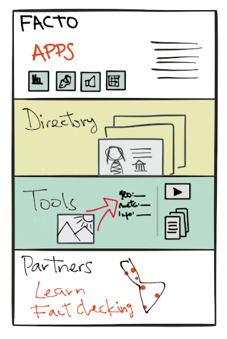
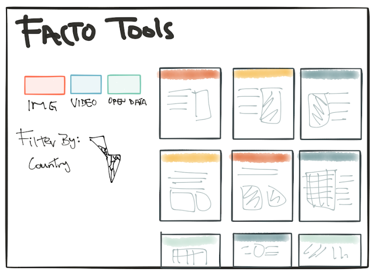
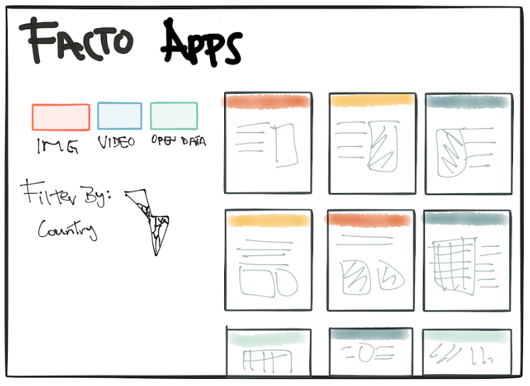
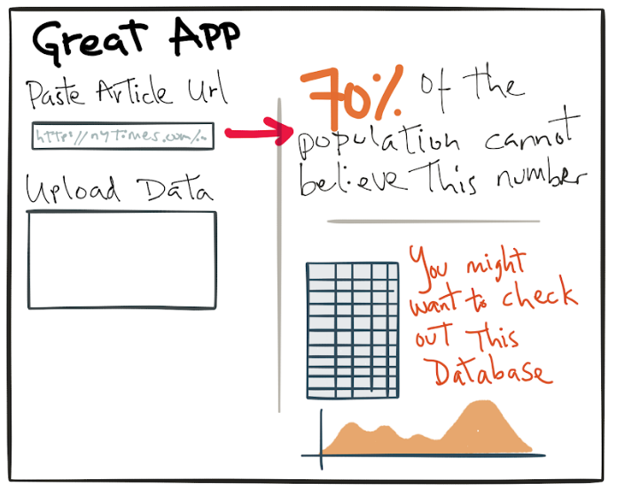
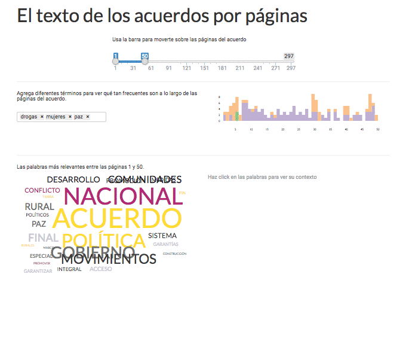
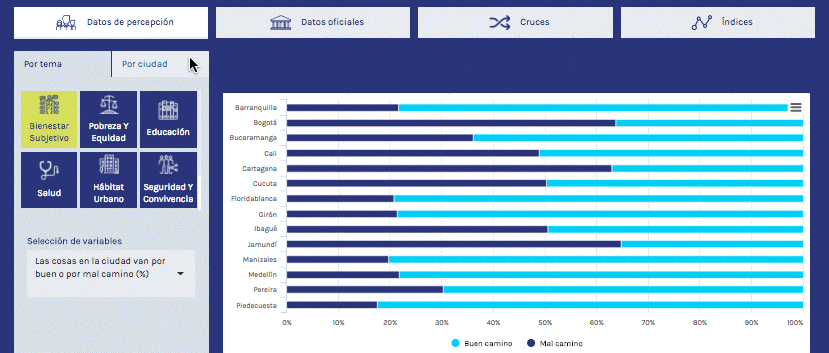
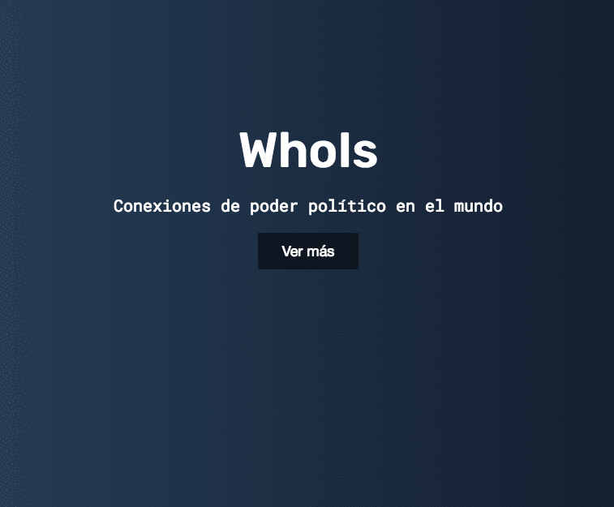
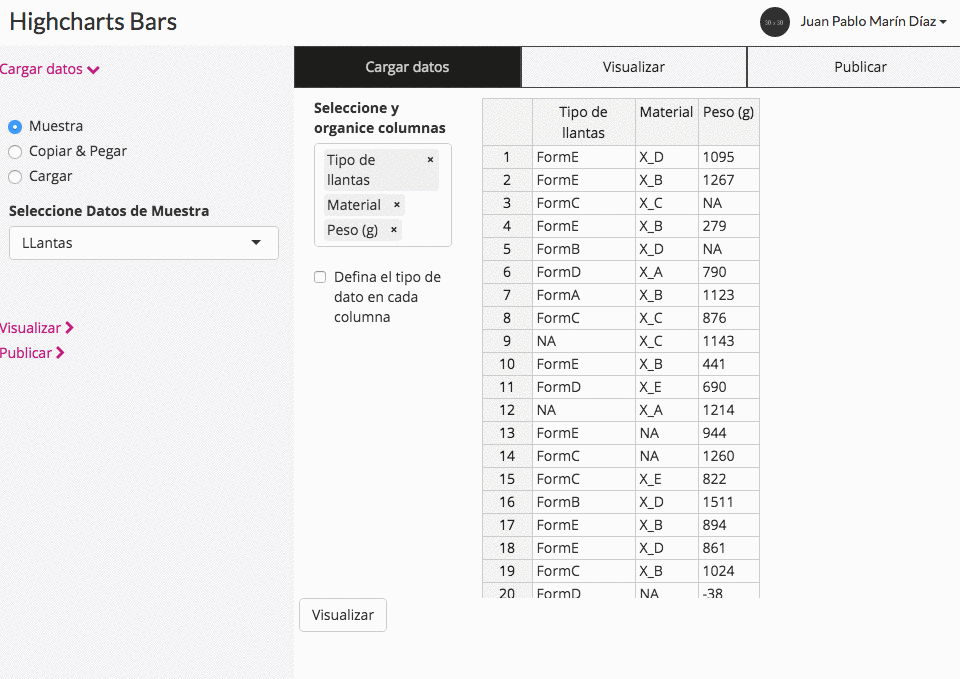
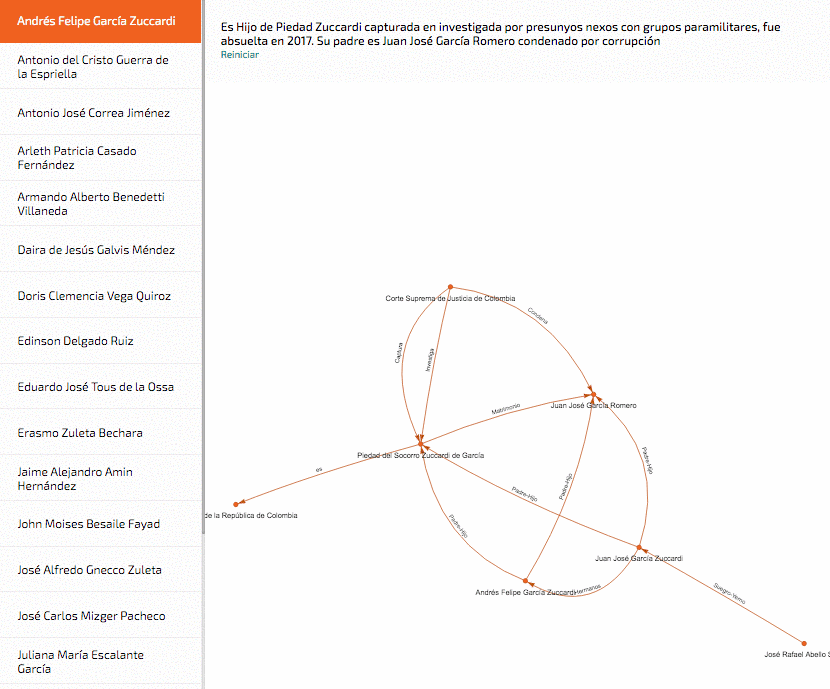

Inicio
How To: Tips para hacer chequeo
Frases para chequear
Accede a las fuentes
Recursos externos
Bases de datos
Herramientas
Presentaciones
Facto Demo

Easy to filter cards with all the information the site

Sample app design. User interaction with articles, texts or data input and data driven output to help the fact checking process

Sample Apps to be developed
Scan documents visually for relevant information
See sample

Easy to browse open data on different indicators about cities or regions
See sample

Explore open connections databases
See sample

General visualization app
See sample

Use public records for investigations around candidates
See sample
